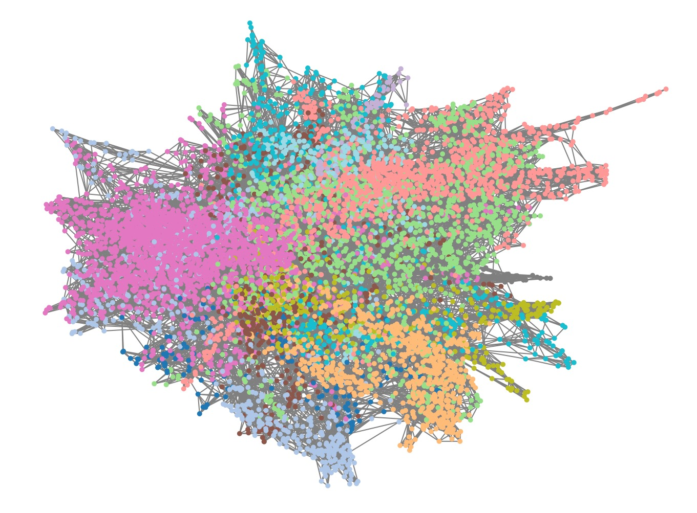

Wellcome Clinical Research Fellow
Imperial College London
This site hosts resources related to research from my PhD on characterising multimorbidity clusters. Here you can access code lists used in the research, as well as results including interactive versions of published figures designed to help visualise the relationships between diseases. This website is a work in progress and will be updated as findings are developed.
Supervisors: Professor Paul Aylin, Professor Mauricio Barahona, Professor Azeem Majeed, Dr Tom Woodcock, Dr Jonathan Clarke
This work is funded by the Wellcome Trust 4i programme at Imperial College London.
Multimorbidity, or the presence of multiple long-term conditions in one person is a growing priority for health systems across the world. Healthcare has traditionally been designed around the referral and treatment of single diseases, meaning that people with more than one disease often need to see multiple specialists who may have conflicting priorities regarding a person's management. There is a growing interest in defining groups of similar diseases or people with similar diseases, often referred to as 'clusters', with the hope that these might help identify shared causes between diseases, and shared opportunities for prevention and treatment.
In my PhD, I aim firstly to develop clusters of both diseases and people based on patterns of diseases co-occurrence in a person. Secondly, I aim to explore the relationship between clusters of people with health outcomes (such as mortality) and healthcare utilisation (for example, whether a person is admitted to hospital). Disease clusters can help us to identify similarity between diseases, which can aid in understanding shared mechanisms of disease development. However, disease clusters are limited in terms of understanding relationships with outcomes and with healthcare use, and for this reason, I develop and focus on clusters of people.
To determine the similarity between diseases and people, I focus on methods developed in natural language processing (NLP). These methods are designed for the analysis of sequences of words and can handle large datasets. In my PhD, I apply the same methods to sequences of diagnostic medical codes in the electronic healthcare record in general practice in England.
Most previous research on multimorbidity clusters have focussed on a small number of diseases (usually less than 20), which might miss relationships between diseases that are less common (see Busija et al (2019)). In my research, I aim to use a more data-driven methods including all diagnostic codes indicating a disease/disorder to be included. However, there are tens of thousands of distinct disease codes, and in order to assess the interpretability of the codes, categorisation of codes is required. Others have used disease taxonomies or hierarchies, for example, chapters in the ICD-10 hierarchy of diseases. However, hierarchies such as ICD-10 are mostly 'systems' categorisations, for example the 'respiratory system', and so may link based on anatomical proximity (such as asthma and lung fibrosis), rather than aetiology.
For my PhD, I use a set of 212 diseases defined previously in the literature. The original set of diseases were defined by Kuan and colleagues for the CALIBER study, and available from the HDRUK Phenotype Library . Of the original 308 conditions, Head and colleagues selected 211 conditions relevant to multimorbidity for a study of multimorbidity incidence and prevalence, with the code lists available on GitHub. These codes lists have been developed specifically for use in the CPRD Aurum dataset used in this study.
I reviewed the codes in the original lists from Head and colleagues and made some edits to the codes. I also created a new category of 'Chronic Primary Pain', as a common condition in primary care, and one that is frequently included in studies of multimorbidity, but not included in the original CALIBER code lists. Where conditions were included in another category, these were removed, for example Fibromyalgia was originally included in 'Chronic Fatigue Syndrome', and was removed from this category. There were also changes to the codes included for diabetes, with removal of codes indicating a specific Type 1 or Type 2 diagnosis from the 'Other/unspecified' diabetes category. The full list of codes are available via the link below. The disease, disease number, system and system number are recorded as in the Head code lists. The 'medcodeid' variable represents the unique code identifier available in CPRD. The 'istest' category represents codes which have an assigned a value. In these cases, whether a condition is incldued depends on the treshold value being met.
Link to download: MEDCODE_DISEASE_LIST.csv
If importing the csv into software such as Microsoft Excel, be sure to import as text to avoid rounding of the Medcode IDs.
Code lists have also been created to categorise staff types in the CPRD Aurum dataset. The link below downloads a csv file containing the 'jobcatid' assigned to each staff member. These have been categorised into GP, nurse, clinical_other (e.g. healthcare assistants), admin or other.
Link to download job category assignment: STAFF_TYPES_CATEGORIES.csv
In order to evaliuate the interpretability of disease clusters, we developed a set of 253 established disease association pairs. The aim here is to provide a list of conditions which are clinically well-established to be associated with each other, but is not an attempt to provide a comprehensive list of all possible associations. To create this list, I considered all 212 diseases, and used sources including the BMJ Best Practice guidelines to create a set of known disease associations for each disease, incorporating both known risk factors and known complications for a given disease. The set of disease pairs were reviewed by two co-authors with clinical backgrounds and any disagreements were discussed. A total of 144 conditions were included with at least one association to another disease. The list is available to download via the link below. Note that each pair appears twice, and depending on your purpose, you may wish to de-duplicate each pair of associations.
Link to download: DISEASE_ASSOCIATION_PAIRS.csv
Dimensionality reduction techniques were first used to visualise relationships between diseases. Multiple Correspondence Analysis (MCA) was used to create a vector representation of each disease, trialling retention of different numbers of dimensions. The link below shows an interactive plot of diseases for the first two dimensions retained using MCA. More similar diseases appear closer together on each dimension. Also overlaid on the plot are patient age category and the number of long-term conditions (LTCs). As can be seen, age and number of LTCs are strongly represented on the first dimension. Conditions common in younger people tend to separate from those more common in older people along dimension 1. Chronic liver conditions separate strongly on dimension 2.
Interactive plot of the first two dimensions from MCA
Disease clusters were created using a three-step process. First, vector representations ("disease embeddings") were created using a) MCA and b) NLP methods (comparing Word2vec and GloVe). Second, similarity of each disease to each other disease was determined by calculating the cosine similarity, creating a 212 by 212 matrix. Of co-occurrence methods, we found MCA with 30 dimensions to perform best and of the NLP methods, we found skip-gram using multiple codes (SGM) to perform best. The MCA and SGM embeddings are available to download here:
Download: MCA embeddings
Download: SGM embeddings
Third, diseases were clustered based on their cosine similarity. We adopted a graph-based clustering algorithm, Markov Multiscale Community Detection (MMCD), with a Python implementation available on GitHub. This method identifies optimal clusters at different resolutions, and we compare the resulting clusters at a fine, medium and coarse resolution. Our analysis pipeline is available in a Jupyter notebook below, which runs in Python version 3.8.10 and uses the MCA or SG-M embeddings.Download jupyter notebook: MMCD pipeline
Finally, we created word cloud representations of the disease assignments to clusters, available for clusters derived from both MCA and SGM embeddings below:
Further details on our approach to identifying disease clusters can be found in our pre-print on medRxiv.
To create direct representations of people, rather than diseases, based on their disease sequences, we created a transformer architecture inspired by BERT, and extending on the BEHRT model. Further information is given in our pre-print on medRxiv . Codes relating to EHR-BERT are available to download here. The folder includes a python notebook, along with a dummy data set (in .pkl format), which runs in Python version 3.10.9.
Download EHR-BERT files: EHR-BERT folder